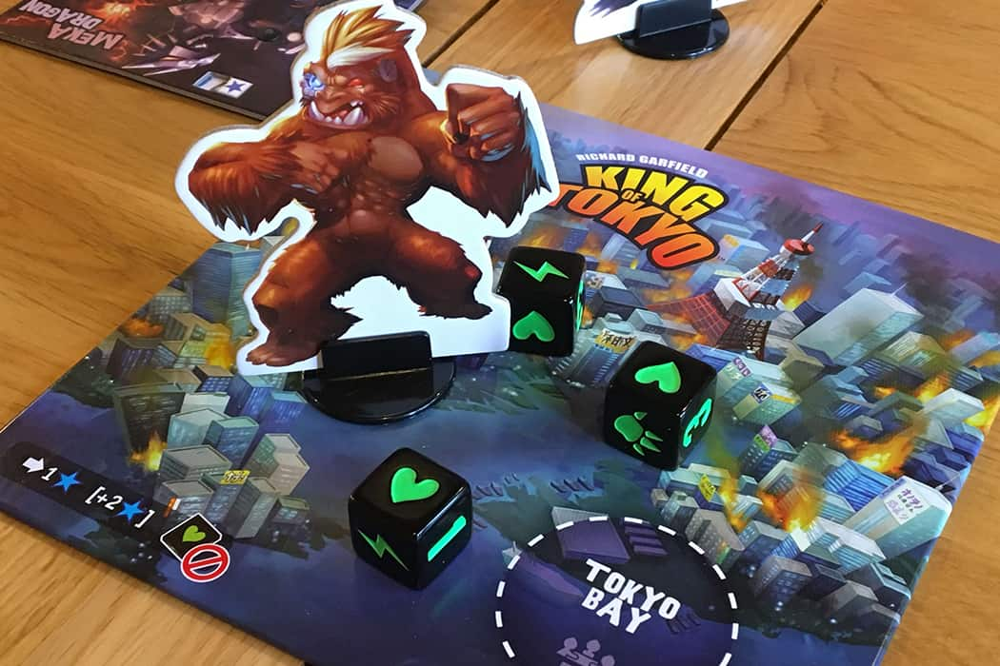
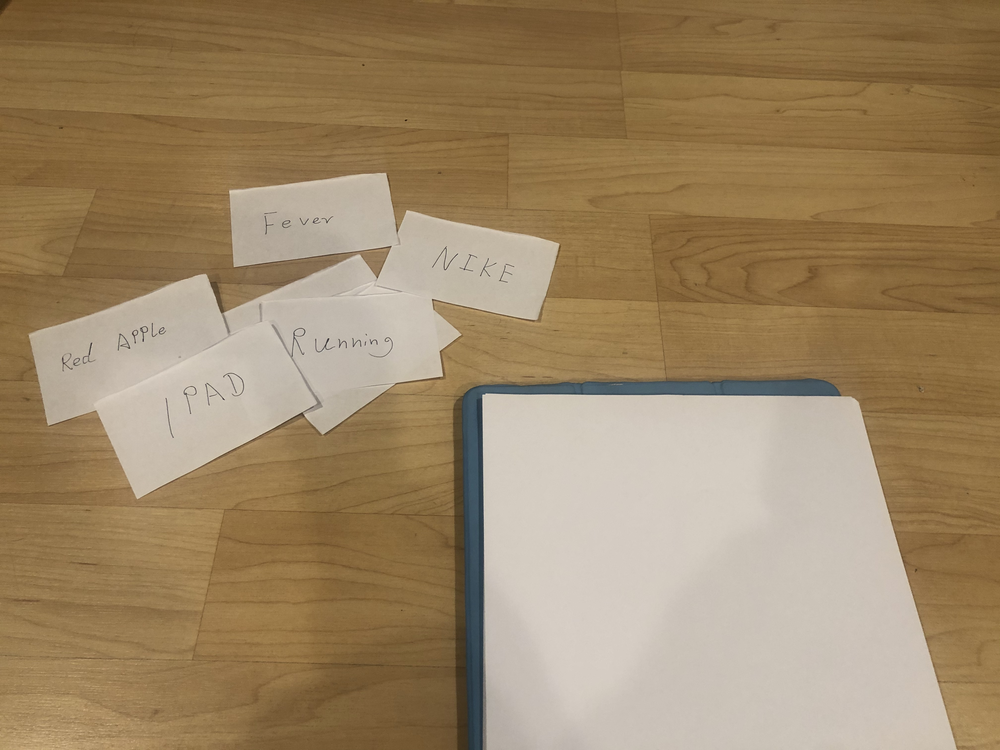

Blog Post 1: Internet Arcade

Super Tank
The game I play is called “Super Tank”, it’s so interesting and I play around about half an hour. During the game, I control a tank drive around, the mission is to get a higher point which is challenge and light up my passion as well.
Survival and eat the “points” is the basic way to gain points. In the meantime, the commuter will send more and more tanks to attack me but I can shoot back and destroy them, also it gets points as well. But it really challenges my brain and
hands. The main difference between playing on an emulator and playing the game on the original hardware is the feeling. I like the original hardware more because it draws me in when I tap the button. Also, the screen is too small for me to
play in my browser. Anyways, there is one thing that makes me joyful when playing on the browser is I can crazy insert coins and has an unlimited life.
Blog Post 2: Boardgame Lab

King of Tokyo
Players: Timothy To, Eric Moua, Jolene Tsai, Jacob Moreno, Wilson Wu, Yingshi Feng
King of Tokyo is a simple game that fit any age. I have the opportunity to play it with Timothy To, Eric Moua, Jolene Tsai, Jacob Moreno, and Yingshi Feng. We have six players at the beginning and each of us picks out a character as well as
put it in the respective board. The board has 3 random pick cards available to purchase. And the cards clearly explain what is it and how to use it. However, we start to roll the dies to determine who goes first. Eric goes first, he enters
Tokyo bay and gets energy. Then Timothy got 3 energy and save it. I think saving energy is a smart move anyways. The following play Yingshi enters the Bay too. In my turn, I attack the people who enter the bay. They lose hearts. And I notice
people who stay inside the bay have easier died. Because everybody is attacking them. In the second round, I attack the people in the bay again then he dies as well, but I have to move in the bay to fill the empty space. Then Yingshi attacks
me 4 points. Eric uses the card call destroy to me and it loses my other 6 points at once. I died. Eric kills all the players in the bay and wins the game.
Boardgamegeek link: https://boardgamegeek.com/boardgame/70323/king-tokyo
Blog Post 3: Prototyping

Drawing Solitaire
Rules
4 to 6 people. select one person as a referee every round.
Preparation:
A large board.
Yellow cards.
Writing board and paper for each player.
The referee gives six yellow cards to each person.
Everybody has 1 minute for drawing and 20 secs to write down the answer. Referee time it.
No talking during the game.
Start:
1. Every person selects a word or sentence from the Yellow card.
2. Then draw on their own board and explain the word by drawing something without any letters. Referee collect back the Yellow card and in order to place it upside down on the large board.
Guess the word:
3. Pass your board to the other person next to you in clockwise. Then he/she will make a guess based on your drawing. Then write down the answer to the referee. The referee collects the answer and drawing from the last player then in order to
place it upside down on the large board.
In the meantime, you will get the drawing from the other person and you need to make a guess and write it down to the referee too.
4. Cycle:
Every person repeats the step above until the last person writes down his/her answer.
5. Reveal the answer：
In the end, the referee collects all the answers and drawings and in order to open it to the player.
If the person guesses the correct word from the upper person, both of them get 1 point.
If the word is correct from start until a pass to the last person, everyone gets 1 point. The people who selected the word get 3 points.
The highest points person wins the game.
Log 1
Log 2
Log 3